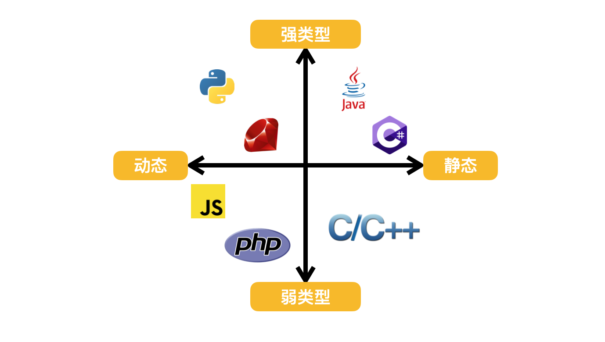
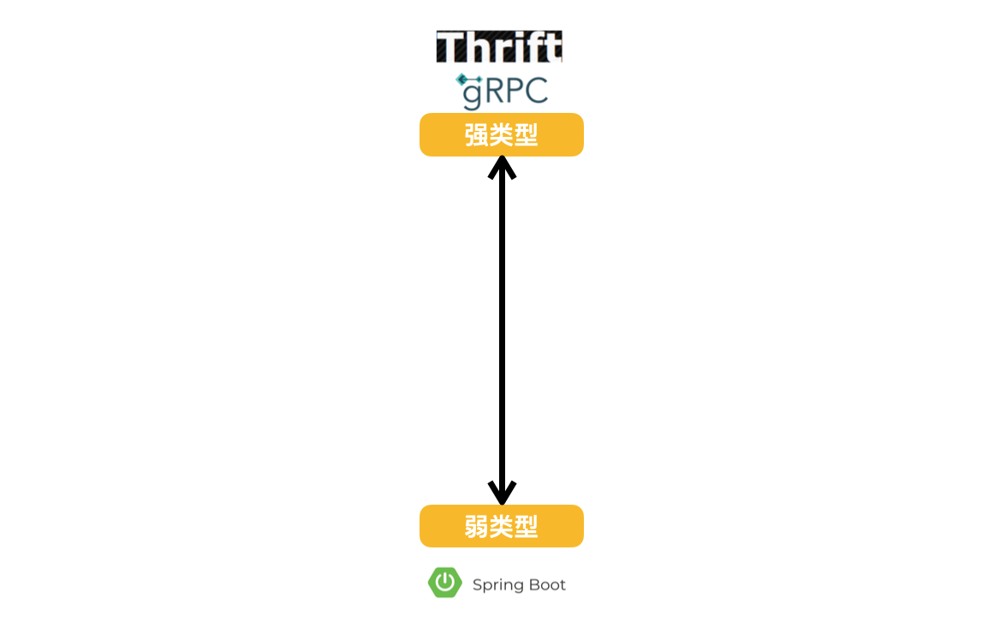
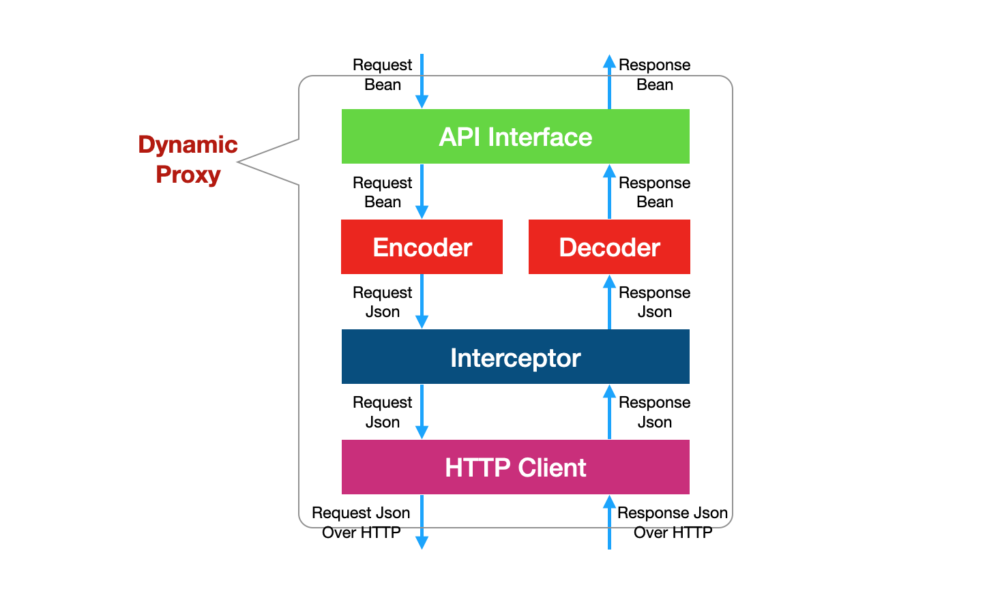

强弱类型语言
众所周知编程语言有强弱类型之分，进一步还有动态和静态之分。比如 Java、C# 是强类型的（strongly typed）静态语言，Javascript、PHP 是弱类型的（weakly typed）动态语言。
强类型静态语言常常被称为类型安全（type safe）语言，一般在会编译期间进行强制类型检查，提前避免一些类型错误。弱类型动态语言虽然也有类型的概念，但是比较松散灵活，而且大多是解释型语言，一般没有强制类型检查，类型问题一般要在运行期才能暴露出来。
强弱类型的语言各有优劣、相互补充，各有适用的场景。比如服务端开发经常用强类型的，前端 Web 界面经常会用 Javascript 这种弱类型语言。

强弱类型 API
对于服务 API 也有强弱类型之分，传统的 RPC 服务一般是强类型的，RPC 通常采用订制的二进制协议对消息进行编码和解码，采用 TCP 传输消息。RPC 服务通常有严格的契约（contract），开发服务器前先要定义 IDL（Interface Definition Language），用 IDL 来定义契约，再通过契约自动生成强类型的服务端和客户端的接口。服务调用的时候直接使用强类型客户端，不需要手动进行消息的编码和解码，gRPC 和 Apache Thrift 是目前两款主流的 RPC 框架。
而现在的大部分 Restful 服务通常是弱类型的，Rest 通常采用 Json 作为传输消息，使用 HTTP 作为传输协议，Restful 服务通常没有严格的契约的概念，使用普通的 HTTP Client 就可以调用，但是调用方通常需要对 Json 消息进行手动编码和解码的工作。在现实世界当中，大部分服务框架都是弱类型 Restful 的服务框架，比方说 Java 生态当中的 SpringBoot 可以认为是目前主流的弱类型 Restful 框架之一。

当然以上区分并不是业界标准，只是个人基于经验总结出来的一种区分的方法。
强弱类型 API 优劣
强类型服务接口的好处是：接口规范、自动代码生成、自动编码解码、编译期自动类型检查。强类型接口的好处也带来不利的一面：首先是客户端和服务端强耦合，任何一方升级改动可能会造成另一方 break，另外自动代码生成需要工具支持，而开发这些工具的成本也比较高。其次强类型接口开发测试不太友好，一般的浏览器、Postman 这样的工具无法直接访问强类型接口。
弱类型服务接口的好处是客户端和服务器端不强耦合，不需要开发特别的代码生成工具，一般的 HTTP Client就可以调用，开发测试友好，不同的浏览器、Postman 可以轻松访问。弱类型服务接口的不足是需要调用方手动编码解码消息、没有自动代码的生成、没有编译器接口类型检查、代码不容易规范、开发效率相对低，而且容易出现运行期的错误。
有没有办法结合强弱类型服务接口各自的好处同时又规避他们的不足呢？
我们的做法是在 Spring Rest 弱类型接口的基础上借助 Spring Feign 支持的强类型接口的特性实现强类型 Rest 接口的调用机制，同时兼备强弱类型接口的好处。
首先我们来介绍下 Spring Feign，Spring Feign 本质上是一种动态代理机制（Dynamic Proxy），只需要我们给出 Restful API 对应的 Java 接口，它就可以在运行期动态的拼装出对应接口的强类型客户端。拼装出的客户端的结构和请求响应流程如下图所示：

- 客户应用发起一个请求并传入一个
Request Bean，这个请求通过 Java 接口首先被动态代理截获 - 通过相应的编码器（
Encoder）进行编码，成为Request Json Request Json根据需要可以经过一些拦截器（Interceptor）做进一步处理- 处理完之后传递给 HTTP Client，HTTP Client 将 Request Json通过 HTTP 协议发送至服务器端
- 当服务端响应回来后，相应的
Response Json会被 HTTP Client 接收到 - 经过一些拦截器做一些响应处理
- 转发给解码器（
Decoder）解码为Response Bean - 最后
Response Bean通过 Java 接口返回给调用方
整个请求响应流程的关键步骤是编码和解码，也就是 Java 对象和 Json 消息的互转，这个过程也被称为序列化和反序列化，另外一种叫法为「Json 对象绑定」。对于一个服务框架而言，序列化、反序列化器的性能对于服务框架性能影响是最大的，也就是说可以认为 Decoder 和 Encoder 决定了服务框架总体的性能。
虽然我们开发出来的服务是弱类型的 Restful 服务，但是因为有 Spring Feign 的支持，我们只要简单的给出一个强类型的 Java API 接口就自动获得了一个强类型客户端，也就是说利用 Spring Feign 我们可以同时获得强弱类型的好处（编译器自动类型检查、不需要手动编码解码、不需要开发代码生成工具、客户端和服务器端不强耦合），这样可以同时规范代码风格，提升开发测试效率。
我们可以在项目内为每个微服务提供两个模块，一个是 API 接口模块（如 mail-api），另一个是服务实现模块（如 mail-svc）。API接口模块内就是强类型的 Java API 接口（包括请求响应的 DTO），可以直接被 Spring Feign 引用并动态拼装出强类型客户端。
项目结构如下：
1 | . |
注：我这里没有采用
xxx-api和xx-svc的命名方式，直接是xxx-api表示 API Client 模块，xxx为服务实现模块。
我们以用户注册后发送通知邮件来写一个简单的例子。发送邮件 client 定义如下：
1 | // mail-api/src/main/java/com/demo/mail/client/MailClient.java |
其中 Response 定义如下：
1 | @Data |
用户服务调用发邮件 API 实现如下：
1 | // account/src/main/java/com/demo/account/service/UserService.java |
为了体现异常处理流程，上边代码仅用于演示，在生产环境下发邮件应该为异步处理，无需检查发送结果。我们在服务内加了全局异常处理，所以直接向上抛出即可。
最后再补充一点，业界 Restful API 的设计通常采用 HTTP 协议状态码来传递和表达错误语义，但是我们的设计是将错误码打包在一个正常的 Json 消息当中，也就是 Response 当中，这一种称为封装消息 + 捎带的设计模式，这样设计的目标是为了支持强类型的客户端同时简化和规范错误处理，如果借用 HTTP 协议状态码来传递和表达错误语义，虽然也可以开发对应的强类型客户端，但是内部的调用处理逻辑就会比较复杂，需要处理各种 HTTP 的错误码，开发成本会比较高。